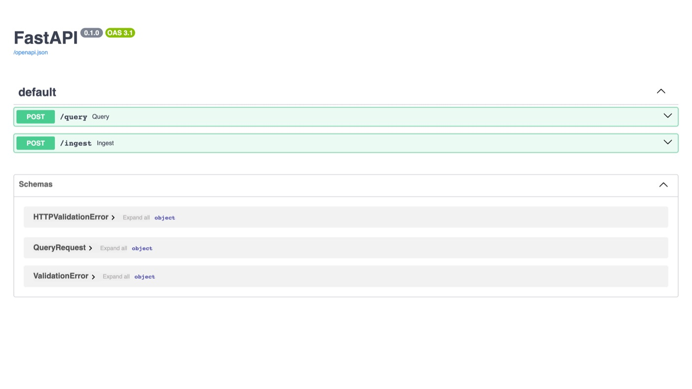
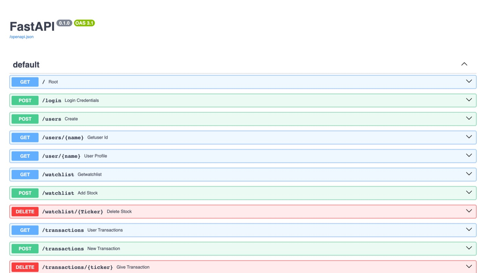
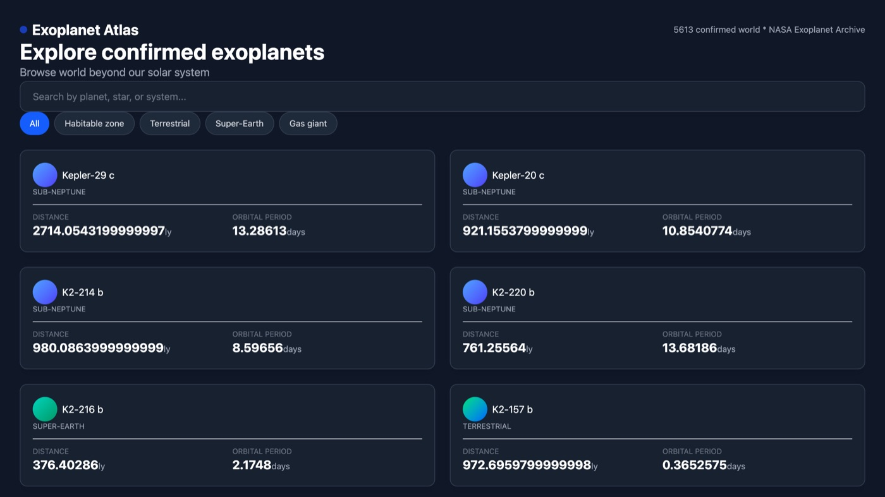

cache 23.8ms→16.6ms
retrieval 17%→43%
throughput 1,534 req/s
alert accuracy 1/5→5/5
hit rate 95%
01
Case Files

SymptomRetrieval missed the correct page on a dense SEC filing — visually salient answers ranked below cluttered table pages.
DiagnosisRaw similarity search alone wasn't enough; correct pages ranked 19th–39th of 58 on dense-table lookups.
FixBuilt a two-stage reranking pipeline. Also found and fixed two concurrency bugs (local-storage race, model-loading race) via load testing.
Verified17% → 43% top-3 accuracy · +26pp

SymptomSame-tick price alerts were only firing 1 out of 5 times — users would miss real threshold crossings.
DiagnosisAn early-return in the alert dispatcher was serializing what should've been simultaneous deliveries.
FixRoot-caused and rewrote the dispatch path. Instrumented Redis with hit/miss counters and load-tested under JWT-authenticated concurrent traffic.
Verified5/5 accuracy · 95% hit rate · 1,534 req/s

SymptomRepeated NASA archive queries against 900+ exoplanets were slow and redundant.
DiagnosisNo caching layer; every request hit Postgres cold. Also wanted a distributed path for larger batch transforms.
FixAdded a Redis cache-aside layer and a parallel PySpark/Databricks pipeline writing to Delta Lake. Built a from-scratch RAG pipeline over arXiv papers with an eval harness.
Verified23.8ms → 16.6ms · avg rank 1.07/25
02
Experience
Jun 2026 — Present
Virtusa
AI Engineer Intern · Remote
- Built a self-healing RAG observability system using RAGAS metrics to detect data and concept drift against DuckDB baselines.
- Automated corrective re-ingestion and re-ranking, escalating to engineers only after three failed retries.
- Designed a 12-table schema with three-role RBAC and a 53-pair golden dataset for pre-production evaluation.
Mar 2026 — Present
BettrLabs
Software Engineer Intern · Remote
- Engineered a Neo4j knowledge graph modeling brand identity across 10+ entity types and 6+ relationship types.
- Built a graph-grounded RAG pipeline anchoring LLM responses in structured graph context.
Sep — Dec 2025
RUMAD
Backend Engineering Fellow
- Built a RESTful backend with Express and Supabase, owning the data layer and auth for the mentorship platform.
03
Stack
Languages
Python, Java, JavaScript, TypeScript, C, SQL
Frameworks
FastAPI, React, Node.js, Express, LangChain
Data
PostgreSQL, Redis, Neo4j, FAISS, Pinecone, Spark, Databricks, Delta Lake
AI / LLM
RAG pipelines, model evaluation (RAGAS), fine-tuning, quantization, PyTorch
Cloud
AWS, Azure, GCP, Docker, CI/CD